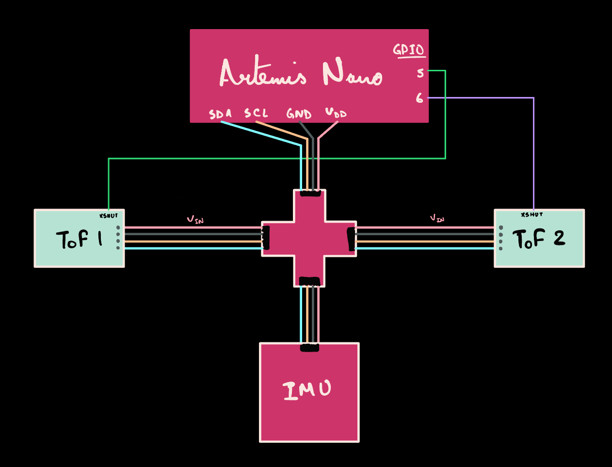
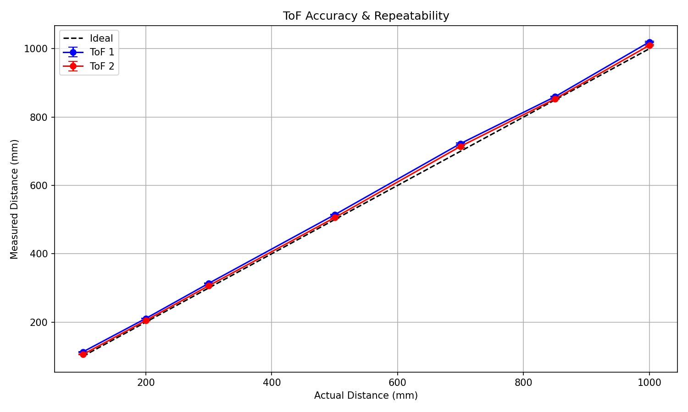
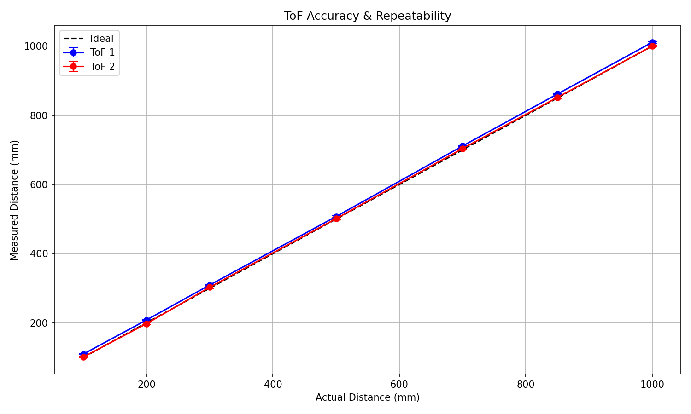
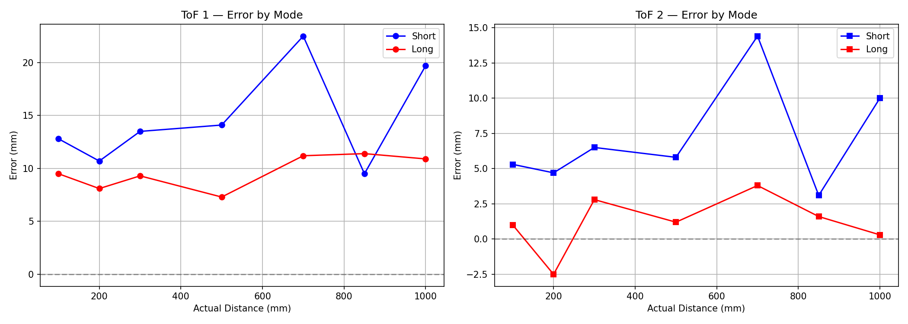
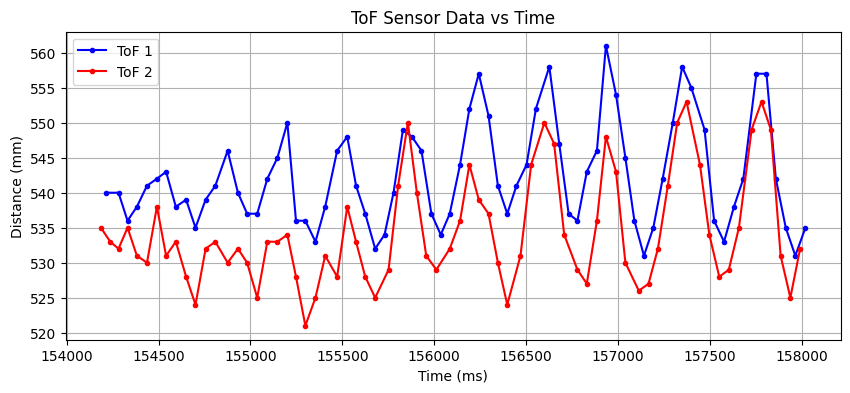
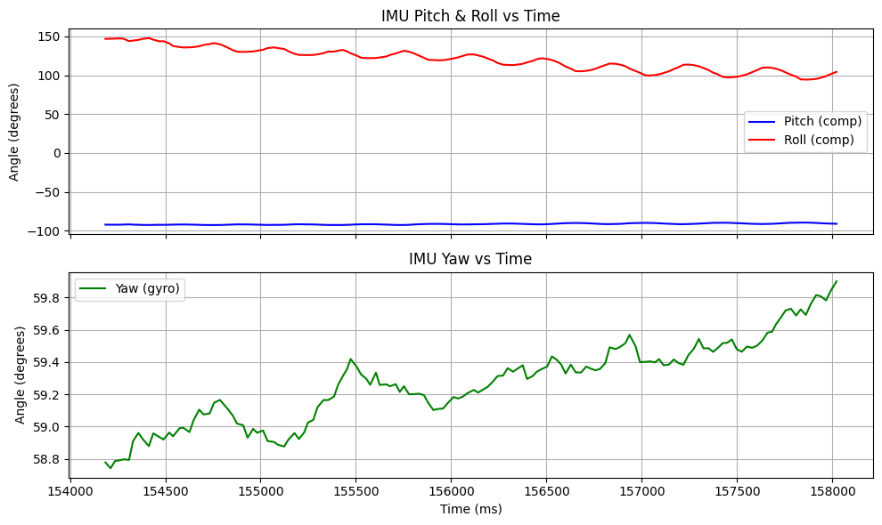

Prelab
Wiring Plan
The two VL53L1X ToF sensors and the ICM-20948 IMU share a single I²C bus via a QWIIC multiport splitter. A short QWIIC cable connects the Artemis Nano to the splitter, two long cables run to the ToF sensors (for flexible mounting on the car), and the last short cable connects the IMU.
One sensor will be mounted on the front and one on the side of the car. This gives the robot forward obstacle detection for collision avoidance and lateral distance measurements for wall-following. Combined with IMU orientation data, the robot can potentially estimate its position within a known arena using two distance readings and a heading angle. More sensors on each side would be ideal for redundancy, but this is the best configuration given available resources.
With sensors on the front and side, the robot will detect obstacles ahead and to the side; this will be useful for avoiding walls during turns. This configuration has a blind spot behind the robot, so reversing will require caution.

Both ToF sensors have their XSHUT pins wired to GPIO: ToF 1 to pin 5, ToF 2 to pin 6. Most setups only wire one XSHUT pin, but I wired both because reflashing the microcontroller while the sensors are powered causes address conflicts if one sensor has already been reassigned. Without hardware reset capability on both, you'd need to unplug and replug the sensors every time or write additional recovery code. With both XSHUT pins wired, a software reset on boot returns both sensors to their default address. Plug and play.
I²C Address Configuration
The VL53L1X default I²C address is 0x52 (8-bit) which appears as 0x29 (7-bit) on a bus scan. The last bit in the 8-bit address is the read/write bit, whereas the actual device identifier is the upper 7 bits. These addresses are embedded in hardware and are non-volatile, so both sensors power up at 0x29 every time.
To run two sensors on the same bus, we need unique addresses. Using GPIO pins A5 and 6 for XSHUT, the startup sequence shuts down both sensors, wakes one alone to reassign it, then wakes the second:
// Shut down both sensors (reset addresses to 0x29)
digitalWrite(XSHUT_TOF1, LOW);
digitalWrite(XSHUT_TOF2, LOW);
delay(10);
// Wake sensor 1 alone, reassign to 0x30
digitalWrite(XSHUT_TOF1, HIGH);
delay(10);
tof1.begin();
tof1.setI2CAddress(TOF1_ADDR_8BIT); // 0x60 → appears as 0x30
// Wake sensor 2 at default 0x29
digitalWrite(XSHUT_TOF2, HIGH);
delay(10);
tof2.begin();
...
// Configure both sensors
tof1.setDistanceModeShort();
tof2.setDistanceModeShort();
tof1.setTimingBudgetInMs(50);
tof2.setTimingBudgetInMs(50);Wire and I²C scanners report 7-bit addresses. Passing 0x30 to setI2CAddress() actually sets the sensor to 7-bit address 0x18.The correct call is
setI2CAddress(0x60), which places the sensor at 7-bit address 0x30. The define TOF1_ADDR_8BIT = (0x30 << 1) makes this explicit.Lab Tasks
ToF Sensor Connections

I²C Device Discovery
With both ToF sensors plugged in but at default addresses, the I²C scan only shows one instance of 0x29; the Artemis has no way of distinguishing two devices with the same address (like having the same ID). The IMU appears at 0x69 as expected:
After running the XSHUT address configuration code from the prelab, both sensors appear with unique addresses:
0x10000E9C, which is why all our devices appear there. Port 0x10001190 is the second bus and remains empty.Accuracy Test Setup
The testing rig consisted of both ToF sensors taped to the top edge of the back of a laptop screen, with the IMU taped to the center of the rear of the screen. The laptop's adjustable screen angle provided a stable, repeatable test platform with easy pitch control.

Accuracy Testing & Mode Selection
To select the best sensor mode, accuracy was tested across seven distances in both Short and Long mode. The VL53L1X datasheet describes three modes, but the Arduino library only supports two: Short (up to 1.3m, robust to ambient light) and Long (up to 4m, sensitive to lighting conditions). Both were tested at a 50ms timing budget.


| Short Mode — 50ms Timing Budget | |||||||
|---|---|---|---|---|---|---|---|
| Distance | ToF1 Mean | ToF1 Err | ToF1 Std | ToF2 Mean | ToF2 Err | ToF2 Std | |
| 100mm | 112.8mm | +12.8mm | 1.2mm | 105.3mm | +5.3mm | 1.0mm | |
| 200mm | 210.7mm | +10.7mm | 1.3mm | 204.7mm | +4.7mm | 1.5mm | |
| 300mm | 313.5mm | +13.5mm | 1.2mm | 306.5mm | +6.5mm | 1.3mm | |
| 500mm | 514.1mm | +14.1mm | 1.7mm | 505.8mm | +5.8mm | 1.9mm | |
| 700mm | 722.5mm | +22.5mm | 2.6mm | 714.4mm | +14.4mm | 2.6mm | |
| 850mm | 859.5mm | +9.5mm | 1.4mm | 853.1mm | +3.1mm | 1.3mm | |
| 1000mm | 1019.7mm | +19.7mm | 1.7mm | 1010.0mm | +10.0mm | 2.0mm | |
| Long Mode — 50ms Timing Budget | |||||||
|---|---|---|---|---|---|---|---|
| Distance | ToF1 Mean | ToF1 Err | ToF1 Std | ToF2 Mean | ToF2 Err | ToF2 Std | |
| 100mm | 109.5mm | +9.5mm | 1.4mm | 101.0mm | +1.0mm | 2.8mm | |
| 200mm | 208.1mm | +8.1mm | 2.4mm | 197.5mm | −2.5mm | 2.2mm | |
| 300mm | 309.3mm | +9.3mm | 2.3mm | 302.8mm | +2.8mm | 2.9mm | |
| 500mm | 507.3mm | +7.3mm | 3.0mm | 501.2mm | +1.2mm | 3.1mm | |
| 700mm | 711.2mm | +11.2mm | 2.0mm | 703.8mm | +3.8mm | 2.6mm | |
| 850mm | 861.4mm | +11.4mm | 2.0mm | 851.6mm | +1.6mm | 2.8mm | |
| 1000mm | 1010.9mm | +10.9mm | 2.2mm | 1000.3mm | +0.3mm | 2.5mm | |

Based on these results, Long mode will be used going forward unless on-vehicle testing proves otherwise. These tests were conducted in a static, controlled environment and results may differ on a moving platform with varying surfaces and lighting.
Parallel Sensor Reading & Speed
After configuring unique addresses and initializing all sensors, the boot sequence confirms everything is online:
ToF readings use a non-blocking pattern; checkForDataReady() polls the sensor without waiting, and -1 is stored when data isn't ready yet:
void readToF(int index) {
tof1_array[index] = -1;
tof2_array[index] = -1;
if (tof1.checkForDataReady()) {
tof1_array[index] = (int)tof1.getDistance();
tof1.clearInterrupt();
tof1.stopRanging();
tof1.startRanging();
}
if (tof2.checkForDataReady()) {
tof2_array[index] = (int)tof2.getDistance();
tof2.clearInterrupt();
tof2.stopRanging();
tof2.startRanging();
}
}IMU data is collected in parallel using the same index, storing complementary filter pitch/roll and gyro-integrated yaw:
void readIMU(int index) {
float p, r, pf, rf;
if (getAngles(p, r, pf, rf)) {
updateGyro();
updateComplementary(p, r);
imu_time[index] = (int)millis();
imu_pitch[index] = p;
imu_roll[index] = r;
...
imu_pitch_c[index] = pitch_c;
imu_roll_c[index] = roll_c;
}
}Both functions are called every iteration of the main loop:
while (central.connected()) {
int index = array_index % MAX_ARRAY_SIZE;
time_array[index] = (int)millis();
temp_array[index] = (float)getTempDegF();
readToF(index);
readIMU(index);
array_index++;
write_data();
read_data();
delay(5);
}stopRanging() followed by startRanging() after each reading resolved this, giving the sensor a clean reset and bringing the interval down to the configured 50ms.Combined Data Collection
A new BLE command GET_ALL_DATA sends ToF and IMU data together in a single transfer. The circular buffer is read in two passes — from the current write position to the end, then from the start to the current position — ensuring data arrives in chronological order
case GET_ALL_DATA:
{
int current_pos = array_index % MAX_ARRAY_SIZE;
// Pass 1: older data (current_pos → end)
for (int i = current_pos; i < MAX_ARRAY_SIZE; i++) {
tx_estring_value.clear();
tx_estring_value.append("T:"); tx_estring_value.append(time_array[i]);
tx_estring_value.append("|T1:"); tx_estring_value.append(tof1_array[i]);
tx_estring_value.append("|T2:"); tx_estring_value.append(tof2_array[i]);
tx_estring_value.append("|P:"); tx_estring_value.append(imu_pitch_c[i]);
tx_estring_value.append("|R:"); tx_estring_value.append(imu_roll_c[i]);
tx_estring_value.append("|Y:"); tx_estring_value.append(imu_yaw_g[i]);
tx_characteristic_string.writeValue(tx_estring_value.c_str());
}
// Pass 2: newer data (start → current_pos)
for (int i = 0; i < current_pos; i++) { ... } // Same format
break;
}On the Python side, a BLE notification handler parses each incoming string and appends to local arrays:
timestamps, tof1_data, tof2_data = [], [], []
imu_pitch, imu_roll, imu_yaw = [], [], []
def handler(uuid, bytearray):
data = bytearray.decode('utf-8')
if "|T1:" not in data:
return
t = int(data[data.find("T:")+2 : data.find("|T1:")])
t1 = int(data[data.find("|T1:")+4 : data.find("|T2:")])
t2 = int(data[data.find("|T2:")+4 : data.find("|P:")])
p = float(data[data.find("|P:")+3 : data.find("|R:")])
r = float(data[data.find("|R:")+3 : data.find("|Y:")])
y = float(data[data.find("|Y:")+3 :])
timestamps.append(t); tof1_data.append(t1); tof2_data.append(t2)
imu_pitch.append(p); imu_roll.append(r); imu_yaw.append(y)Sample output from the combined data stream — ToF readings arrive every ~50ms (alternating with -1 when the sensor hasn't finished), while IMU data updates every loop iteration:
ToF vs Time
To demonstrate simultaneous data collection, the laptop was oscillated at a constant pace while recording. The ToF sensors capture the changing distance to the wall:

IMU vs Time
The IMU data was recorded simultaneously with the ToF data above. The complementary filter pitch and roll reflect the same physical oscillation, while gyro-integrated yaw captures any rotational component:

GET_ALL_DATA. The synchronized timestamps confirm that both sensor types respond to the same physical movement, validating the combined data pipeline.Code Architecture
As sensor count and command complexity grew, the original monolithic .ino file became unwieldy. The codebase was refactored into a modular multi-file architecture:
// ============== FILE KEY ============== //
// config.h → Max array size
// tof.h / .cpp → ToF setup, read, start, stop
// imu.h / .cpp → IMU setup, read, reset
// commands.h / .cpp → Command enum + handler
// ble_setup.h / .cpp → BLE init, write_data, read_data
// main.ino → Setup, loop, globalsEach sensor has its own header and implementation file with setup, read, and control functions. BLE initialization, command handling, and the enum are separated into their own files. Shared configuration (array sizes, timing budgets) lives in config.h.
The result: the main .ino file was reduced to 96 lines — just includes, global declarations, setup(), and loop(). Adding new sensors or commands means editing the relevant module without touching the main file.
Acknowledgements
Claude AI was used throughout this lab for assistance with intuition building, debugging, and HTML writeup generation. Specifically, Claude was used to help explain I²C addressing concepts, diagnose dual-sensor address conflicts, design the modular code architecture, and structure the lab report.